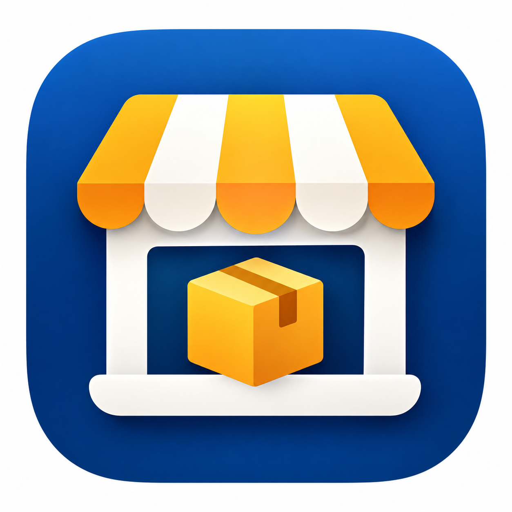
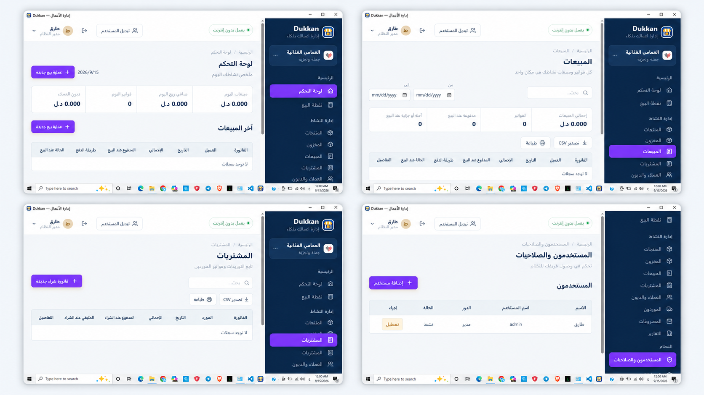
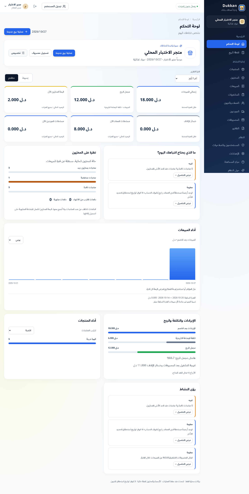

▦
نقطة بيع سريعة
بحث بالاسم أو SKU أو الباركود، مع بيع نقدي أو آجل وخصم تلقائي من المخزون.

Dukkanإدارة أعمالك بذكاء تنزيل النظام ↓Dukkan يجمع المبيعات والمخزون والمشتريات والعملاء والموردين والتقارير في نظام عربي واحد، مع تتبع اختياري للدفعات والصلاحية وإنهاء سنوي مبسط، وبيانات محفوظة محليًا على جهازك.

لوحة نشاط عربية بتصميم زجاجي، تجمع المؤشرات والرسوم والتنبيهات في مساحة واحدة.
رقم الإصدار مستمر: 1.1.0. تحديث لوحة النشاط جاهز في الشفرة؛ ملف Windows المحدث ما زال ينتظر إكمال بناء النسخة والتحقق منها. رابط التنزيل يعرض ملف الإصدار المنشور.

من أول دفعة تدخل المخزون إلى آخر فاتورة في اليوم، يحافظ Dukkan على ترابط الكميات والتكاليف والحسابات.
بحث بالاسم أو SKU أو الباركود، مع بيع نقدي أو آجل وخصم تلقائي من المخزون.
تتبع اختياري للدفعات، تنبيهات قرب الانتهاء ومنع بيع المخزون المنتهي.
اختيار تلقائي للدفعة الأقرب انتهاءً مع الاحتفاظ بتكلفتها وأثرها التاريخي.
مبيعات ومصروفات وديون وتكاليف دفعات بالدينار الليبي بثلاث خانات عشرية.
إتلاف المنتهي أو التالف وإرجاعه للمورد مع حركة مخزون وسبب وسجل تدقيق.
اختر السنة في التقارير وأنهِها بملخص بسيط ونسخة احتياطية، ثم ابدأ التالية مع استمرار المخزون والديون.
ألوان هادئة، أقسام واضحة، وتصميم عربي من اليمين إلى اليسار.
لا تحتاج إلى خادم أو حساب سحابي أو اتصال دائم بالإنترنت.
الاسم، الهاتف، العنوان، الشعار واللون الرئيسي.
فعّل الدفعات والصلاحية فقط للمنتجات التي تحتاج إليها.
FEFO وتنبيهات الصلاحية والفواتير والديون والتقارير في مكان واحد.
نتحقق من ملف Windows الرسمي مباشرة من GitHub.
صُمم Dukkan لخدمة أصحاب الأعمال والمشروعات الصغيرة، ليختصر الوقت ويحفظ الجهد والحقوق، ويجعل التنظيم والنمو أقرب وأسهل.
«هدفي أن تكون التقنية وسيلة للتيسير وخدمة الناس، وأداة صادقة تعين صاحب العمل على رزقه وخدمة مجتمعه.»طارق العمامي — المطور